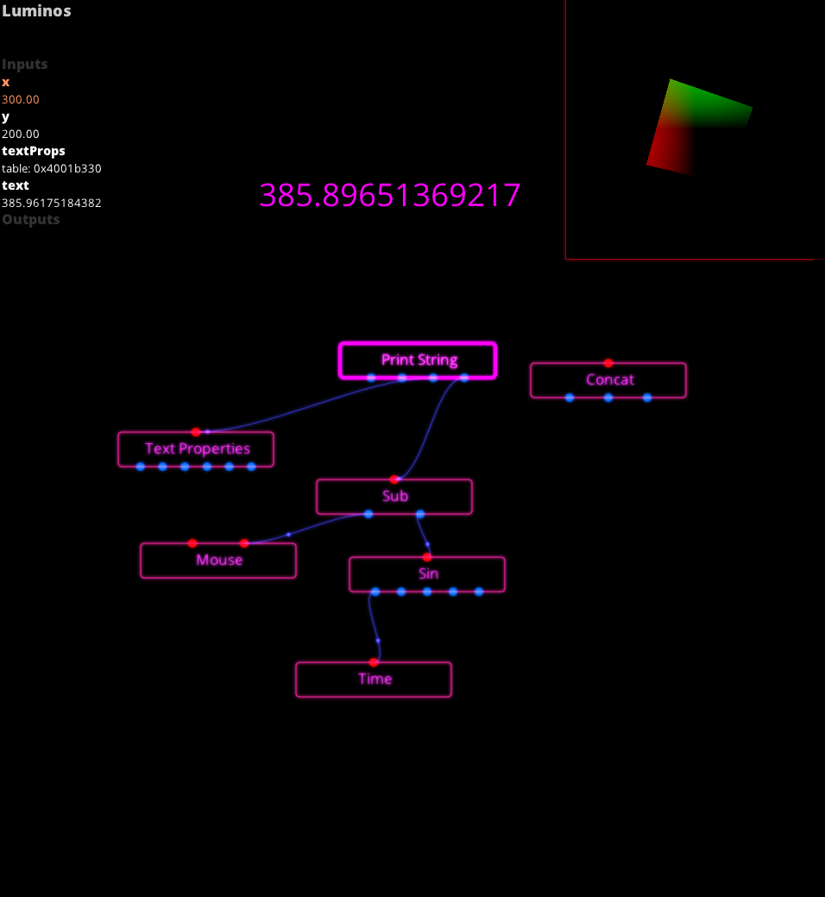
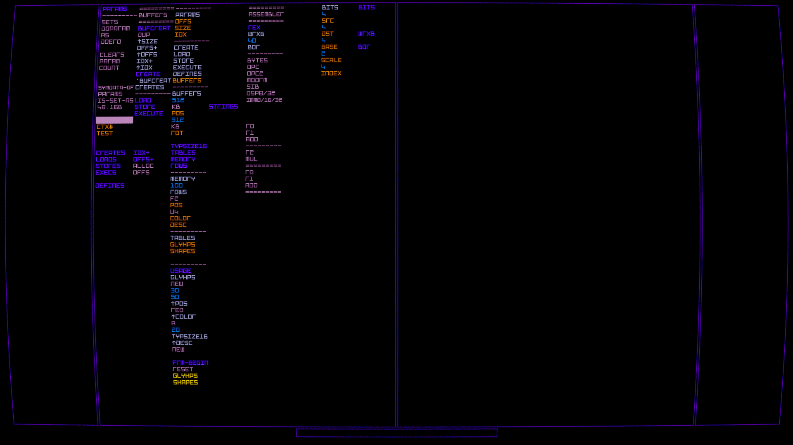

My Coding Journey
I started programming when I was 11, learned C by myself after picking up a book from the bookstore to make games, made lots too.
In retrospect, I fell in love with coding probably because it let me sustain imagination as a child with aphanthasia.
I was feeling existing paradigms were woefully inadequate for the ambitious projects I had in mind for the rest of my life, though I didn't know what I needed either.
Programming UX felt terribly inefficient, I wanted to program at the speed of thought, without barriers, yet all languages imposed arbitrary rules, nothing fit.
So I set out to find truth in search for the optimal language in 2015, there just had to be a better way.
It took only about 7 years to come up with the optimal design.
I had many ambitious goals which I had no idea how to realize, some of those even in conflict with each other.
The dream was to create boundlessly with the ideal minimal, instant, flexible, optimal language.
Instead of committing to an imperfect design, I did many experiments, observe how those failed and correct course until perfection.
Over time I came closer to this perfection, finally put the last pieces of the puzzle in early 2021. with still some room to improve.
This ultimate design is quite unorthodox, even for its own niche, no one writes Forth like this.
Lua and Visual Programming
Luminos
The journey began when I got inspired by tooll.io around 2015 at the Deadline demoparty.
It had reasonably fast iteration, also you could click on any node for instant program visualization, customizable for each node.
I was already experimenting with Lua embedded in C back then so I opted to bring Lua and visual programming together.
I wrote Luminos, which had nodes defined in Lua, node instances and connections specified in binary with by a custom editor with realtime collaboration.
Visual programming is interesting as it allows for non-coders to explore interactively with potential for a more efficient UX that isn't tied to text.
The UX could be optimized for mobile devices with more exotic inputs like touchscreens, pens, cameras, gyros and voice.
Ultimately IMO visual programming isn't suited for most kinds of programming and it slows experienced coders down especially as complexity grows.
Lua has simple, elegant design(apart from 1-indexing) and fast iteration times, although performance isn't optimal even with LuaJIT.
LISP
I learned about LISP and became fascinated with it for about a year, wrote a basic interpreter in C.
'Code is Data, Data is Code' homoiconicity was interesting at first glance, although in retrospect it doesn't help solve actual problems IMO.
They seem dual but there's only one right answer IMO, LISP is a worse Forth with its superflous (((syntax)())) and inferior notation in many ways.
Although most people would disagree with the statement above as evidenced by LISPs popularity, I don't care what most people think.
VR Prototypes/Projects
I spent 3 years prototyping custom made engines, UIs and interaction methods working on Rift and Go.
Programming in VR still remains vastly unexplored, most regard VR as more screen real-estate, I wanted a VR-optimized coding UX.
Interactions with 3D spatial input can be quite liberating for the UX than what keyboard/mouse alone provides.
This is what was super exciting to me, I wanted to break free from the limited keyboard/mouse UX, which in retrospect should've come later.
Rendering text is hard, turns out the best approach for VR is to use a wider filter kernel to counteract swimming artifacts from tiny head-motion noise.
Current resolutions can display around 32-40 short lines of text comfortably, which is quite sufficient IMO, maybe not for current paradigms.
This is blurrier but much more comfortable to read than sharp/swimming/aliased look, next-gen resolutions would make smaller text much sharper.
Rift Protoype
This is the second VR prototype from May 2018, I was still figuring the language runtime out while also prototyping a possible UX for VR.
- Custom D3D12 renderer with code/shader hotloading
- Preprocessing headers to generate C code, which turned out to be a horrible idea, generated so much headaches.
- Multithreaded via custom job system with a custom lockless queue, nothing fancy such as a dependency graph though.
- Custom immediate-mode UI with layouting and animations
- Drum keyboard is actually quite a lot faster to type in than laser-and-click in my experience
- Pseudo-code(nothing executed, still exploring UX) laid out flat in binary, zoom-in/out by pulling/pushing while grabbing
- Frost-shader lets overlay multiple windows, otherwise foreground text would be unreadable
Go Prototype
Oculus Go was quite exciting, with its appealing price around 250$ and quite good hardware for the price.
Single controller might seem limited, combined with a bluetooth keyboard for the other free hand for shortcuts sounded great for UX.
Also the controller and headset was way lighter and comfortable for longer sessions than the Rift.
- Renderer with multiview, modified sokol_gfx, GLES3.1 for compute shaders.
- Hotloading for DLL and shaders for wireless VR development instead of slow adb install which required restarting the app too
- Hotloading worked by checking hashes and sending changed DLL and shader files across a custom server from the dev machine.
- Custom hybrid retained/immediate-mode GUI with animations and table-based layouting
- All UI with SDFs instead of geometry, no frosty UI, blurring would be too slow on a tile-based GPU architecture
- Not using bloated Unity runtime meant I could run in consistently smooth 72FPS, in low CPU(L1)/GPU(L2) power-states
Vertical Table Design
Just a prototype to test whether reading top-bottom would be more comfortable, I don't think it was, wastes lots of space, still interesting to me.

{kind=link}
{kind=link}